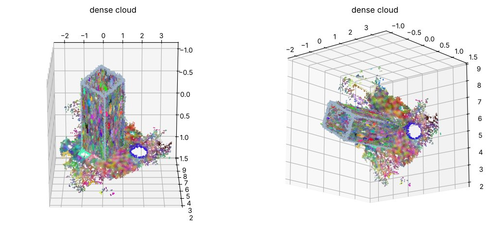

3D reconstruction from photos
I wanted to understand how a pile of ordinary photos turns into a 3D model, so I built the pipeline myself. I followed a seminar by Dr. Suxing Liu. The code finds features in each photo and matches them across photos. Then it works out where the camera was for each shot, builds up a point cloud, turns that into a surface, cleans it up, and paints it with color from the photos. Each step is its own short Python file, and there's a notebook that runs through each stage and shows you what happened.
Four of the pipeline's stages, in order:
To test it, I made fake photos of a textured cube from 36 known camera spots. It found all 36 cameras and landed within 1% of where they really were. I've also run it on the sample photos Dr. Liu gave me, and next I'm shooting my own photo sets to reconstruct.
Here's what the cube test looks like at four of the stages, in order from 1 to 4. Every image below is from the fake-photo test, not real photos.




Code, docs and notebooks are in projects/3d-reconstruction on GitHub.
Claude helped me write the code and edit this description.